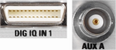

DIG IQ and AUX Connectors (Optional)
 |
The first I/Q board (option R&S CMW-B510x) provides the following connectors:
- Four digital connectors labeled DIG IQ IN 1, DIG IQ OUT 2, DIG IQ IN 3 and DIG IQ OUT 4
These connectors are used for input and output of digital I/Q data. - Two bidirectional high-impedance BNC connectors labeled AUX A and AUX B
These connectors are used for input of the start source signal and for input/output of the clock source signal/enable source signal. They are suited for TTL signals in a level range from 2.5 V to 5 V.
A second I/Q board is available as option R&S CMW-B520x. It provides similar connectors as the first board. But the digital connectors are numbered 5 to 8. And the BNC connectors are labeled AUX C and AUX D.
I/Q boards are required for external fading.